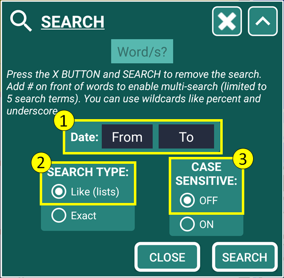

Why was SECURElogBook designed like a finely tuned data harvesting tool?
Because SECURElogBook uses advanced technology to store all your information in one place, including your ideas, texts, hyperlinks, alarms, reminders, medication intake, food and drink consumption, workouts, work-related notes, shopping lists, and more. Its powerful search system lets you group and analyse your records, helping you draw conclusions and make daily improvements. This is the core concept behind SECURElogBook.
To open the search system, press this button
Remember with SECURElogBook you do not need to delete things, on the contrary, the more information the better.
By default, the search is configurated like a magnifying glass to allow you to find anything quickly. For example, you can look for “Milk” and the search will display in the main window (blue) all the records that have “milk”. This will even include lists where the word “milk” was found as an article. By default, the search does not make differentiation between upper or lower case so it will show everything with “milk”.
If you want you can use the advance features by pressing button (D):
A = Title. When we do a search, the number of records found will be added to the end.
B = Text box to enter what we are looking for.
C = Button to reset search parameters.
D = Button to show/hide advanced search parameters.
E = Date from/start.
F = Date to/end.
G = Search type.
H = case sensitive search.
I = Search button.
J = Close button.
Using the advanced search is like using a microscope. You will be able to focus on what you really want. When looking for something new, it is a good practice to make the default search. Then you will see how many records there are and how you typed the word on those records. Maybe there are different variants of the word you are looking for (“milk”, “MILK”, “Milk”). You can finally search for exactly what you want using “Exact” and case sensitive ON if you need it.
Like everything in SECURElogBook the search system it is fast and easy to use, but you have additional features if you want. The default search settings give you a wide search and it is what you will normally use. But, if you want, SECURElogBook gives you a little bit more:
Search type:
. Like (lists) = Shows RECORDS/LISTS, if a RECORD/LIST ITEM CONTAINS the Word/s (default).
. Exact = Shows RECORDS only if a RECORD EXACTLY MATCHES the Word/s or Word/s combination (with wildcards).
Case sensitive:
. OFF = Upper and lower case characters, DOES NOT NEED TO MATCH with the Word/s (default).
. ON = Upper and lower case characters, MUST MATCH EXACTLY with the Word/s.
Date:
. Everything (default).
. From = Only records whose date is the same as the “From” date will be shown.
. From – To = Only records whose dates are between "From" date and "To" date.
Wildcards
When performing a search, some symbols can be used to make the search more flexible, known as wildcards. In addition to search type, case sensitive and dates as search parameters, you can use wildcards. SECURElogBook allows the use of:
. Percent symbol (%) = replaces one or more letters/numbers.
. Underscore (_) = replaces one letter/number.
With the “%” wildcard you can search for information that starts with, ends with or contains something:
. Starts with 123 = 123% (wildcard at the end).
. Ends in 123 = %123 (wildcard in front).
. Contains 123 = %123% (surrounded with wildcards).
Using the underscore symbol, we can find names that are five letters long and start with “S” and end with “th”. Just we need to search for “S___th” (three underscore symbols).
You can also combine both wildcards together. For example, to find names where the second and third characters are “hn”, you can search for “_hn%”.
Multiple search (#)
SECURElogBook will allow you to find what you are looking for, but you can also search for more than one word at a time to group records and draw conclusions from them.
To activate multi-search, you must add the “#” symbol in front of each word. You can search for up to 5 words at a time.
Labelling data
You can label your information by adding a generic text in front and then you can describe it. Thanks to labelling your records, you can easily search for anything in seconds. For example, you can label with “WATER” every record that is a drink (“WATER coffee”, “Water tea”, “Water mineral water”, …)

If you label your information, searching for it will be very easy. For example, if you search for “WATER”, SECURElogBook will show every time you drank water. You will be able to do the same with “FOOD”, “MONEY”, …
Most alarm software only allows you to create one alarm and snooze it, right? You can do that with SECURElogBook too, but as I said, SECURElogBook offers you more if you want it! Remember that SECURElogBook is a flexible tool. So, instead of creating one record for the alarm, you can create two records. We can call them "BedTime IN" when you go to sleep and "BedTime OUT" when you wake up. If you want to snooze the alarm, you can create copies of the record.
The regular alarm app will wake you up and that's it. SECURElogBook it will wake you too but it will store all the information, letting you know when you go to sleep and how much you sleep. And if you snooze the alarm (making copies of it), you will be able to see when you have slept more than usual. Sleep data can reveal if you experience problems when your sleep pattern changes.
Just like a blood test can reveal your health status through certain chemicals, our behaviours can indicate how we feel. For example, the number of hours we sleep and how often we shower are common indicators. People with depression often shower less. With SECURElogBook, you can track your daily activities and notice changes early, allowing you to address potential issues before they become serious.
Export search
After a search, if there are records that can be exported (indicated by “1”), the export search button “2” will appear in the lower left corner of the search dialog.
The export search button “2” converts the records into data that the SECURElogBook import system can use to recreate the records. This allows you to share your information if you wish. For example, a company manager could create tasks/records and send them to workers. Or, a doctor, could create the records to schedule the patient medication. Or, a dietitian, can create the patient diet. Or you could simply send the shopping list to your partner.
When you press the export search button “2”, SECURElogBook will create blocks of data that you can easily paste into text format. Then you can add it to an email and share it with whoever you want.
Create report
After a search, if there are records that can be used to create a report (indicated by “1”), the report search button “3” will appear in the lower left corner of the search dialog.
The report search button “3” will create a report with all the records so a person can understand them. For example, if you keep records of everything you eat and drink and you have a medical problem, you could create a list of everything you ate and drank recently and email it to your doctor. The doctor will see a list that can be read without using any special software.
When you press the report search button “3”, SECURElogBook will create blocks of data that you can easily paste into text format. Then you can add it to an email and share it with whoever you want.
The more information on your search the more block of data will be created. Then you can hold on each block of data on the screen to allow you to copy it:
The report will consist of plain text data that anyone can read without the need for special software.
Search example
Let’s see an easy example to see how the search system works.
Suppose we have these records:
Basically, we have a bunch of records where most of them have the word milk in different ways. We can find that the whole record is either “milk” or “Milk”. In one record the word “milk” is at the end. In another the word “Milk” is at the beginning… The search system will allow you to find anything even when you have thousands of records.
1. To open the search system on the main window (blue), press the button indicated with the arrow:
2. In this example we are going to search for “Milk”, so we type “Milk” and we press the “SEARCH” button:
Remember that by default the search system does a generic search so it will give you a wide view of what you are looking for.
These are the search results:
Note how the search button is yellow and the word “SEARCH” replaces the task counter numbers (top left corner). This is to indicate that we are in search mode, meaning the list does not show all records (it only shows what we are looking for).
As we can see we have different variants of the word we are looking for: “milk”, “Milk”. Because the default search gives you a wide view, we can see that is shows all records containing “milk”, including the entire list where “milk” was found as an item.
SECURElogBook will, by default, add the lists to the search results, so if you are searching for a product, the search system will show you all the shopping lists that product is on, so you can see which store or stores you are buying that product from.
3. If we open the search again, we can see what search settings we have used:
The highlighted parameters are the default settings. Every time you press the search reset button
The search window will also display the number of records found, adding them to the end of the title.
The search reset button
4. After we press the “SEARCH” button, the search indicates that 6 records were found (added at the end of the title). But we can see 5 records containing “Milk”. The extra one is due to the list “SHOPPING LIST Asda” where milk was found:
The reason for that extra record is that the default search type “Like (lists)” will include list inside the results.
5. To remove the search, we only need to follow the steps in the search dialog:
Removing the search is like a very easy logic game where you need to remove the yellow. When you started the search, the search button turned yellow, and the word “SEARCH” replaces the task counter numbers at the top left. To remove the search, press the yellow search reset button
The temporary message on the bottom of the screen will confirm that the search has been removed (remember that you can tap on any bottom message to close it).
The search reset button

That means that we will be able to have a wide search as default:
1. Date = Everything.
2. Search type = Like (lists) = Shows RECORDS/LISTS, if a RECORD/LIST ITEM CONTAINS the Word/s.
3. Case sensitive = OFF = Upper and lower case characters, DOES NOT NEED TO MATCH with the Word/s.
6. If you want to search only the records (not including lists) you can use “Exact” search type. For example, you can search for “%milk%” (that means everything containing “milk”):
Notice how we added the wildcards, front and back, to create the same search but without additional records from the lists.
7. After we press “SEARCH”, we will only see in our results records containing “milk”:
When using the “Exact” search type, the results may show individual records from a list, as this search ignores additional list information. To see the entire list containing the searched word, use the “Like (lists)” search type instead.
8. Now we are going to use the “Exact” search type without using wildcards (%). So, we will search for “Milk”:

9. After we press “SEARCH”, we will only see in our results records that match “Milk” with its possible variants (“Milk”, “milk”):
Because we used the “Exact” search type and we did not add any wildcard, the records in the list must match “Milk”. But it will not make differentiation between upper or lower case variants (as we did not activate it).
10. The more precise search can be achieved by using the “Exact” search type with case sensitive ON. With this condition the search result must match exactly what we are looking for. For example, we can search for “milk”:
11. After pressing “SEARCH”, we will only see in our results the records that exactly match “milk” (no variants allowed):
Only one record has milk typed in lower case and matches exactly “milk”.
Search for multiple words at the same time
When you search for multiple words at the same time, the list will only show the records containing those words. That means that you will have all your records in one place to allow you to draw conclusions from them. This can help you to learn things abut yourself and get better every day.
To activate multi-search, you must add the “# “symbol in front of each word. You can search for up to 5 words or search terms at a time.
1. For example, if we want to find records containing “water” and “Shopping” we only need to add the wildcard in front of each word:
2. After pressing “SEARCH”, we will only see in our results the records contain “water” and “Shopping”:
Like always records will be shorted by time in ascending order. Also, because we use the default search settings SECURElogBook will give you a wide view with everything where it found “water” and “Shopping”.
When searching for data, less is more! This means you can start with a default search to see possible variants of the word you are looking for in the search results. Then, if needed, you can perform a more precise search using advanced search settings.
You can do a little experiment to measure how many hours of sleep you need. Start by creating two records: “BedTime IN” for when you go to sleep and “BedTime OUT” for when you wake up. At the end of each day, create another record to indicate how you felt in terms of energy and activity, which we can call “ENERGY LEVEL”. Follow this system for one or more weeks (the longer, the better) and consider changing how much time you sleep or when you go to sleep.
After some time, you can search for “#BedTime#ENERGY LEVEL” in SECURElogBook, which will show you all the records containing those words. By reviewing these records, you will learn what is the most efficient way for you to sleep. Ideally, you should maintain the same sleep conditions for a few days, then make a change and keep the new conditions for a few days. This information will help you understand the best sleep schedule for you, where you sleep less but have more energy.
The results will show 3 records for every day. The time that you slept will be indicated in the first record of each day, as the time between the first record (“BedTime IN”) and the second record (“BedTime OUT”). Then the third record will be described how you felt that day.